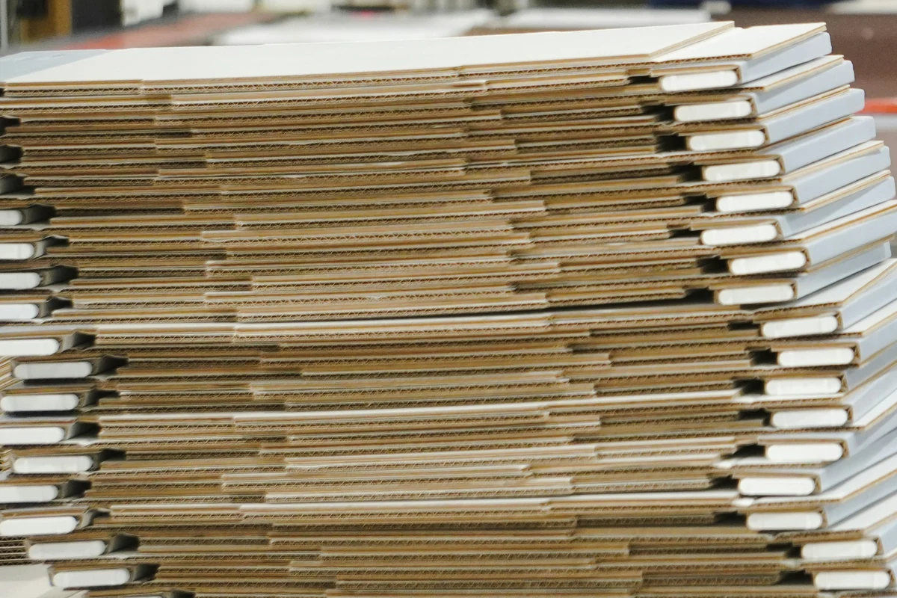
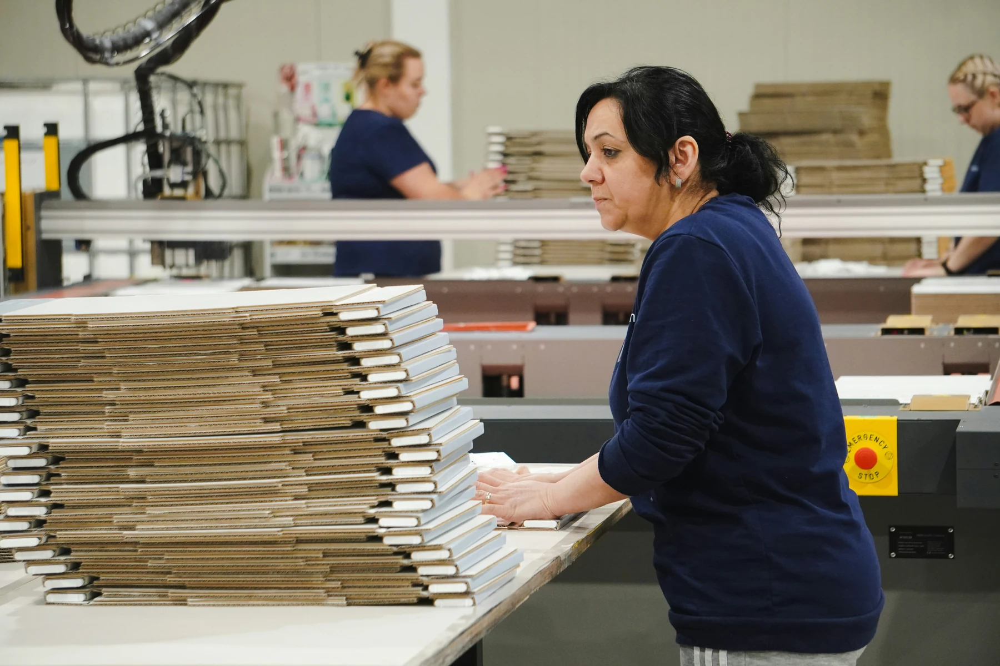

AI built around how a fibre operation runs.
Pulpwood and sawmill residuals into pulp, paper, board and packaging. Built for converting operations, where furnish, grade and the order book decide the margin.
Four phases, from furnish to shipped board.
Fibre in, board and packaging out. The cycle below is the one every converting operation runs, and the places the information breaks down are the same ones we have already solved upstream.
Fibre & Supply
Furnish · receive · grade · cost
What comes in decides your cost base and your quality ceiling at the same time. Pulpwood, residuals, recovered fibre and bought-in board arrive from different suppliers, on different terms, priced in units that do not compare. So the cost of an input is known at the invoice and almost never at the grade it ended up in, which is the only level at which it would be useful.
Quarri matches what arrived to what was weighed and what was invoiced, and carries that cost through to the grade it actually went into.
- Paper weighbridge tickets and receipts read at volume
- Arrived, weighed and invoiced matched per load
- Input cost attributed to the grade produced
- Suppliers scored on promised against actual dates
Weighbridge tickets and fibre receipts read off the page and tied to the grade they went into.
Converting & Waste
Sheet · print · die-cut · finish
Converting is a series of changeovers with production in between. Every grade change, plate change and die change stops the line, and because the cost lands across dozens of jobs nobody adds it up. Waste behaves the same way: trim, make-ready and broke are each small enough to ignore individually and large enough to matter in aggregate.
Quarri costs every changeover and every kind of waste against the jobs that caused them, so the true cost of a short run stops hiding inside the average.
- Changeover and make-ready costed to the job
- Trim, waste and broke measured, not absorbed
- Short runs priced at what they actually cost
- Same-spec jobs sequenced into one setup

On a converting line the time spent getting ready to run is rarely separated from the time spent running. It should be.
Order book & Inventory
Order · reel · stock · dispatch
Reels, board and finished cartons have to become an order book, and the two speak different languages. A reel is a width, a diameter and a grade; an order is a spec and a date. Matching them is a trim and sequencing problem usually solved on a whiteboard, which holds until a grade change or a late delivery makes the whole week wrong.
Quarri re-solves the order book against the stock and capacity you actually have, so a promise date survives a grade change instead of being rebuilt around it.
- Order book re-solved against real stock and capacity
- Every roll and reel tracked to its order
- Lead time by grade, not a flat rule
- Ageing stock flagged well before it goes dead

The order book solved against the stock and capacity actually available, with the order at risk flagged before the customer hears about it.
Pricing & Margin
Cost · quote · price · margin
Pricing is where a converter's margin is actually decided, and it usually happens on last year's list and a feel for the customer. Which grades earn, which customers are worth the line time, and whether a job is worth taking at all are all answerable from your own numbers, but only once input cost, waste and line time are joined to the price you achieved. Most operations find that out afterwards.
Quarri joins input cost, waste and line time to the price you achieved, so a quote is priced on what the job will really cost and the customer book is ranked on margin rather than revenue.
- Quotes priced against real cost to produce
- Margin by grade, by customer and by run
- Customer mix ranked on margin, not revenue
- Purchase, receipt and invoice matched per line

Margin per grade against the plant average, computed from input cost through to tonnes shipped.
AI at the foundation. Not retrofitted.
Most software for this chain was built as a form. Quarri was built as a model of your operation.
- Their fields, your words mapped in
- Exceptions become change requests
- Paper is a keying job
- Every run costs a model call
- New questions join the queue
- Reports you wait to receive
- Scale by hiring around the gaps
- Your words, from day one
- Exceptions become rules you edit
- Paper read at volume, deterministically
- 100x cheaper per execution
- Questions asked in plain English
- Dashboards and scripts you build yourself
- Scale by pointing it wider
Ask it in plain English. Across all four phases.
Because weighbridge ticket, job record, stock position and invoice all land in one governed layer, a question can cross the whole operation instead of stopping at a system boundary. That is a margin lever, not just a tidier way to operate.
- Any question across the cycle, in plain English
- Numbers computed, so the answer matches the ledger
- Dashboards and scripts your team builds and shares
- Alerts when waste climbs or a margin slips
Margin per tonne by grade after input cost and waste. The question crosses four systems; the answer does not care.
The same engine, pointed at fibre.
Everything on this page is capability we run today in forestry and lumber, aimed at furnish, reels and grades instead of blocks and loads. The document capture, the cross-system reconciliation, the order book solver and the margin engine are the same code that reconciles a scale ticket to a levy invoice upstream. What changes is your vocabulary, your units and your grades. We have not yet published a converting deployment, and we would rather say that than imply one.
Trim that pays for itself.
Every order cut from a reel or a sheet leaves an offcut, and across a year those offcuts are one of the largest controllable costs in converting. Solved job by job the waste is invisible. Solved across the whole order book it is a number you can bank, and it is the piece we are building next for this vertical.
- Orders nested across the book, not job by job
- Offcut and trim waste costed to the run
- Reel and sheet widths chosen against real demand
A design sketch rather than a screenshot. It is not in the product today, and we would rather show you early and hear what it needs to do.
Most operators sit on more than one link.
See it on your own data.
Live in two weeks, on the systems you already run.